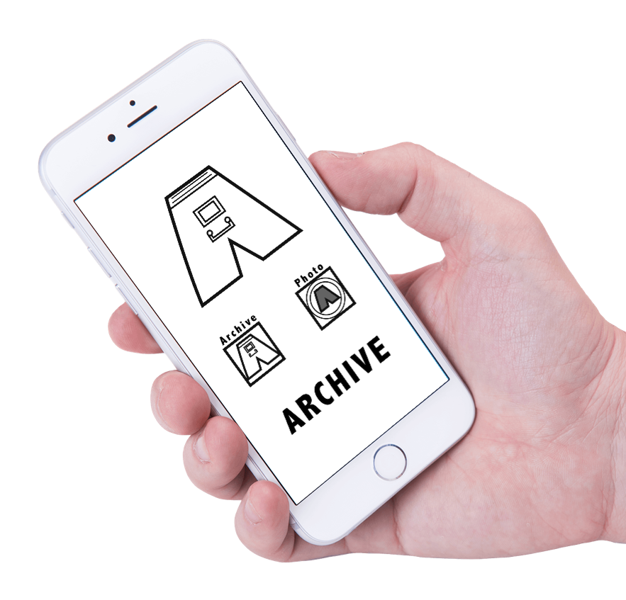
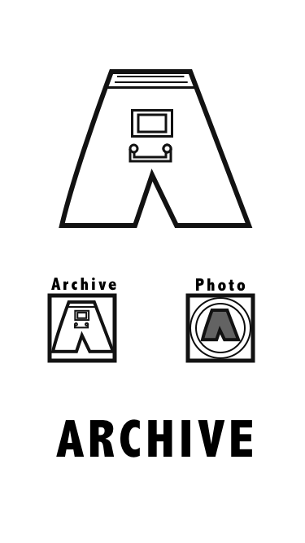

Archive App
An image managing application for reference photos
About The Project
This project was a one week exercise in designing based on a problem and rapid feedback. I worked with one user, Dina Beigelman, to discover a problem she faced in every day life and to evolve a solution to fix it.
My Role
My role on the project was to create wireframes and a paper prototype and to get Dina's ultimate approval. The app went through three iterations of content and information architecture. Additionally, a goal of the exercise was to find ways where this individual user's needs superseded design patterns. I tested the app with Dina and six other potential users, created wireframes, user flows, and a paper prototype.
The Problem & The Solution
Dina recently accepted a job and needed to find her social security card. She couldn't find the physical copy. She knew she'd taken a picture of it a few years back for another job, but has tens of thousands of photos and couldn't find it.
Through research and interviews with Dina I came up with an idea for a photo-archiving app for reference pictures such as recipes, personal documents, receipts, and other miscellaneous reference items/materials. The idea was to use this app instead of the standard camera app when taking a picture that would need to be stored for later use.
Feedback
Dina gave me some pointed feedback on the app (some of which you can see on the settings screen). Specifically, she wanted to be able to back up to Dropbox and Google drive, since she likes redundancy. Additionally, she didn't want to load directly into the camera, but to have a choice whether to go to the camera or to the archive view.
he default archive categories are based on the types of photos Dina wants to archive, but the option is available to add more in the future. When you take a picture, the app requires you to place it, so that you will have it organized for the future. This level of handholding was controversial in interviews with outside potential users, but Dina felt strongly about it.

Takeaways
During the project, I tested each iteration with the user through a paper prototype. What was most fascinating (and difficult) was completely turning off my internal biases towards design patterns and other best practices when creating an app. There were a lot of features specifically around cloud syncing, touch ID, and loading options that I wanted to include. Generally, I believe these should be included in an app when it makes sense with the design. However, because the app was for one user and one user alone, and she didn't use these features in other apps, I removed the features.
The overall exercise was fun, we rarely get to test features on a daily basis with an individual user to learn from their reactions over time. Dina was thrilled with the final design, and the overall feedback from others was so positive that there's definitely a potential business in creating a photo management app specifically around reference materials.
